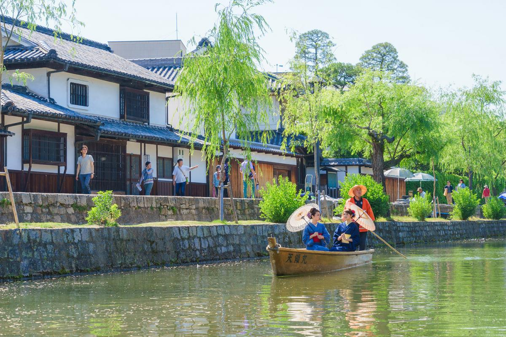
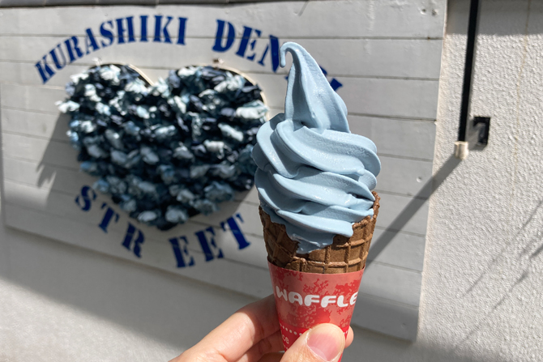
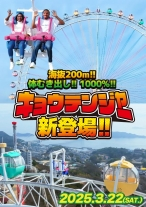

岡山には、定番の名所からちょっと穴場な場所まで見どころがたくさんあります。ここでは、「せっかく岡山に来たなら行ってみたい」観光スポットをまとめました。
倉敷美観地区は、岡山観光の定番スポット！昔の街並みが残っていて、白壁の建物や川沿いの景色は歩くだけでもいい雰囲気です。おしゃれなカフェや雑貨屋さんも多く、食べ歩きしながらのんびり散策できるのが魅力です。フォトスポットもたくさんあるので、友達と行っても楽しめます。

倉敷市の児島は、「国産ジーンズの発祥地」として有名で、その中心にあるのが「児島ジーンズストリート」です。通りにはジーンズショップや雑貨屋が並び、歩くだけでも楽しめます。ここで人気なのが、青色がインパクト抜群の「デニム味のソフトクリーム」！味が気になる人は、ぜひ実際に食べて確かめてみてください。


倉敷市にある鷲羽山ハイランドは、瀬戸内海を一望できる絶景スポットにある遊園地です。スリル満点のジェットコースターや瀬戸内海を独り占めにできるスカイサイクルがあります。最近登場した新アトラクション「キョウテンジャー」は、体をむき出しにして回る観覧車で、スリルと景色の両方が味わえるのが魅力です。